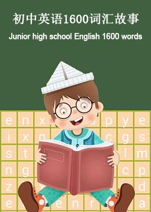

《初中英语1600词汇故事》中英双语阅读

初中英语1600词汇故事 (Junior high school English 1600 words)
作者：未知 (unknow) [中国]
把初中英语1600个单词巧妙地编成70篇小故事，将单词放在文段中去理解，联系上下文，加以一定的推测。而且文章是连贯的、具象的，更加能够加深印象，提升记单词的效率。
难度：
初中
长度：
短篇
分类：
社会
第一篇: 年轻军官与老兵 A Young Officer and an Old Soldier
第二篇: 您是要感谢她吗？ Are You Going to Thank Her?
第三篇: 萨姆与托德 Sam and Tod
第四篇: 在酒吧 In the Bar
第五篇: 一把黑伞 A Black Umbrella
第六篇: 朋友 Friends
第七篇: “耳聋的”妻子 The 'Deaf' Wife
第八篇: 我们真的不知道 We Really Don't Know
第九篇: 雷蒙德 Raymond
第十篇: 原来如此！ That's Why!
第十一篇: 像猪一样生活 Living like a Pig
第十二篇: 格林兰岛与冰岛 Greenland and Iceland
第十三篇: 说谎比赛 A Competition of Lying
第十四篇: 美国的体育 Sports in America
第十五篇: 我的小妹妹卡迪 My Little Sister Candy
第十六篇: 中国的小学生 Pupils in China
第十七篇: 语寄情 Say it with Flowers
第十八篇: 通过做与行学习 Learning by Doing and Going
第十九篇: 简回家太晚 Jane Came Home Too Late
第二十篇: 我儿子的问题 My Son's Questions
第二十一篇: 我做了一件傻事 I Did a Silly Thing
第二十二篇: 蛇 Snakes
第二十三篇: 秘书的电话 A Call from the Secretary
第二十四篇: 我的海贝收藏 My Collection of Sea Shells
第二十五篇: 早餐很重要 Breakfast Is Important
第二十六篇: 送礼物的正确方式 The Proper Way to Give Gifts
第二十七篇: 一个真正的男子汉 One Real Man
第二十八篇: 发电 Making Electricity
第二十九篇: 我的宠物狗在哪里？ Where Is My Pet Dog?
第三十篇: 为什么我们不应该吸烟？ Why Shouldn't We Smoke?
第三十一篇: 未来的工作 The Jobs of Tomorrow
第三十二篇: 制止两个男孩打架 To Stop Two Boys from Fighting
第三十三篇: 吉米和他儿子的有趣故事 Jimmy and His Son's Funny Stories
第三十四篇: 买房子 Buying a House
第三十五篇: 乘小船在海上 At Sea in a Small Boat
第三十六篇: 粗心的夫妇 A Careless Couple
第三十七篇: 保护牙齿 Protecting Your Teeth
第三十八篇: 美国课堂行为守则 American classroom Rules
第三十九篇: 钥匙还是吻？ Keys or Kiss?
第四十篇: 很高兴认识你 Very Pleased to Meet You
第四十一篇: 教室里出现一只蟑螂 A Cockroach in Our Classroom
第四十二篇: 这是我的晚餐 This Is My Supper
第四十三篇: 两位旅行者 Two Travelers
第四十四篇: 世界各地的人用英语交流 People Around the World Communicating in English
第四十五篇: 旅行日志 Travel Diary
第四十六篇: 黑尾巴的蓝猪 The Blue Pig with a Black Tail
第四十七篇: 一个女孩的微笑 A Girl's Smile
第四十八篇: 带着女儿上班节 Take Our Daughters to Work Day
第四十九篇: 姑妈弗兰奇 Aunt Frankie
第五十篇: 飞航 A Flying Sail
第五十一篇: 多彩的世界 The Colorful World
第五十二篇: 电脑越来越普及 Computers Are Becoming More and More Popular
第五十三篇: 渴望国王的青蛙 Frogs Longing for a King
第五十四篇: 中餐 Chinese Food
第五十五篇: 花坛的秘密 The Flower-bed's Secret
第五十六篇: 电视的价值 TV's Value
第五十七篇: 敲钟的猫 The Cat That Rang the Bell
第五十八篇: 刘易斯和克拉克到达太平洋 Lewis and Clark Reach the Pacific
第五十九篇: 筷子 Chopsticks
第六十篇: 北京动物园 Beijing Zoo
第六十一篇: 可乐 Coke
第六十二篇: 草莓西瓜果汁 Strawberry and Watermelon Juice
第六十三篇: 不要付出这种代价 Don't Pay the Cost
第六十四篇: 钢铁 Iron and Steel
第六十五篇: 时间永不复返 Time Never Returns
第六十六篇: 功夫入门 The ABC of Kongfu
第六十七篇: 美国第一位非洲裔第一夫人 The First African-American First Lady
第六十八篇: 日本诗歌纸牌比赛 Japanese Poem Card Game
第六十九篇: 洗淋浴 Taking a Shower
第七十篇: 关于木星 On Jupiter